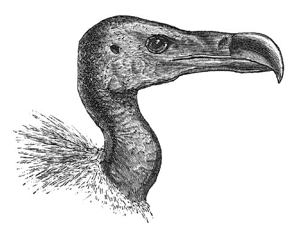

स्लेंडर-बिल्ड गिद्धSlender-billed Vulture
Gyps tenuirostris · Accipitridae · BRD-0343

- Scientific name वैज्ञानिक नाम
- Gyps tenuirostris G.R.Gray, 1844
- Family कुल
- Accipitridae
- Hindi हिंदी
- स्लेंडर-बिल्ड गिद्ध
- Local names स्थानीय नाम
- slender billed vulture
- Status here यहाँ की स्थिति
- native
- Movement आवागमन
- Resident, here all year
- Known from कहाँ दर्ज
- Others have published records from the wider Awadh–Purvanchal plain, none yet from Basti–Ayodhya अवध–पूर्वांचल से दूसरों के प्रकाशित अभिलेख, बस्ती–अयोध्या से अभी नहीं
- IUCN IUCN
- CR
- Review समीक्षा
- not yet reviewed
When to look कब देखें
Present all year. साल भर मौजूद।
Tell it apart from इनसे अलग पहचानें
स्लेंडर-बिल्ड गिद्ध / Slender-billed Vulture
Gyps tenuirostris G.R.Gray, 1844 — Accipitridae
स्लेंडर-बिल्ड गिद्ध — हिमालय की तलहटी से असम तक और उत्तर भारत के मैदानों में पाया जाने वाला गिद्ध, जिसका सिर और गर्दन लगभग नंगे होते हैं और चोंच पतली (बेकर 1928)। बेकर ने इसे भारतीय गिद्ध की उपजाति G. i. nudiceps माना था; आज इसे अलग प्रजाति Gyps tenuirostris माना जाता है। यह चट्टानों पर नहीं, पेड़ों पर घोंसला बनाता है। आईयूसीएन रेड लिस्ट (BirdLife International 2021) में यह गंभीर रूप से संकटग्रस्त (CR) है।
Quick Identification त्वरित पहचान
| Feature | Description | |
|---|---|---|
| Habit | Large, tree-nesting obligate scavenger of submontane plains and river valleys | |
| Size | Large vulture, darker and narrower-billed than an [[indian_vulture | Indian Vulture]] |
| Head & Neck | Head and neck practically naked, with no hairy down on crown and nape and little or none on the neck (Baker 1928, p. 17) | |
| Bill | Brownish dusky horny bill with horny-black cere and open nostrils (Hume, in Baker 1928, p. 17) | |
| Plumage | Upper plumage sometimes darker and browner than the Indian Vulture's; underparts more brown, less fulvous (Baker 1928, p. 17) | |
| Flight | Broad rectangular wings held flat in a steady, soaring glide | |
| Tail | Short, broad dark brown tail |
Field tip: Look for an entirely bare blackish-wrinkled head and neck without down, slender dark bill with horny-black cere, and habit of nesting singly in huge cotton-trees near villages (Baker 1928).
हिंदी:
इसका सिर और गर्दन पूरी तरह नंगी व काली होती है, चोंच का आधार (cere) सींग-काला होता है, और यह सेमल के पेड़ों पर घोंसला बनाता है (बेकर 1928)।
Morphology आकारिकी
Measurements as given by Baker (1928):
| Measurement | Range |
|---|---|
| Wing, Tail, Tarsus & Culmen | Wing 590 to 630 mm. ; tail 237 to 256 mm. ; tarsus about 110 mm. ; culmen 66 to 68 mm. (Baker 1928 as Gyps indicus nudiceps) |
The Slender-billed Vulture is a large bird of prey characterized by its long, bare, wrinkled neck and slender bill. Stuart Baker (1928, p. 17) described the plumage: "the upper plumage is sometimes darker and browner and the underparts more brown and less fulvous; the bill is more slender with a rather larger, more open nostril." The entirely naked head and neck are dark blackish-slate, completely lacking down, with prominent folds of skin.
Soft parts (Hume, quoted in Baker 1928, p. 17): "bill brownish dusky horny; cere horny-black; ... tarsi and toes black." Iris dark brown.
हिंदी:
बेकर (1928) के अनुसार इसका ऊपरी भाग अधिक गहरा और भूरा तथा निचला हिस्सा कम पीलापन लिए होता है; सिर और गर्दन पूर्णतः गंजे और काले होते हैं। ह्यूम के अनुसार चोंच मटमैली सींग जैसी और चोंच का आधार (cere) सींग-काला होता है।
Behaviour & Ecology व्यवहार और पारिस्थितिकी
Stuart Baker (1928, p. 18) summarized its habits: "Those of the genus. It is one of the Vultures which haunt the vicinity of villages and breed on the trees round about them."
हिंदी:
बेकर (1928) के अनुसार इसका स्वभाव अन्य गिद्धों जैसा ही है; यह गांवों के आसपास भटकता है और गांवों के निकट स्थित पेड़ों पर प्रजनन करता है।
Life Cycle / Phenology जीवन चक्र
Stuart Baker (1928, pp. 17–18) recorded: "builds its nest on trees, not on cliffs, even when these are available. The nest is like that of the other Vultures which breed in similar places, great structures of sticks and branches, used for several years but always renewed and lined with green branches and leaves... though in no case did I find more than one nest in any tree. Some were built low down, some at inaccessible heights in huge Cotton-trees. Only one egg is laid, like that of other birds of the genus but, as a series, better marked."
The huge cotton-tree mentioned is Semal (Bombax ceiba). Breeding runs "from the middle of November to the end of February" (Baker 1928, p. 17).
हिंदी:
बेकर (1928) के अनुसार यह गिद्ध चट्टानों पर नहीं, बल्कि हमेशा पेड़ों पर घोंसला बनाता है, विशेषकर सेमल (Cotton-trees) के पेड़ों पर। प्रत्येक पेड़ में केवल एक घोंसला होता है और केवल एक अंडा दिया जाता है।
Host Plants or Prey आहार
Stuart Baker (1928, p. 18) noted that it haunts village vicinities and feeds on animal carcasses. No source opened for this atlas records any living prey taken.
हिंदी:
यह गांवों के पास मृत पशुओं के शवों पर भोजन करता है (बेकर 1928)। इस एटलस के लिए खोले गए किसी भी स्रोत में जीवित शिकार का कोई रिकॉर्ड नहीं है।
Predators / Natural Enemies शत्रु
No source opened for this atlas names a specific predator of this bird.
हिंदी:
इस एटलस के लिए खोले गए किसी भी स्रोत में इस पक्षी के किसी विशिष्ट शिकारी का नाम नहीं है।
Agricultural / Human Relevance कृषि प्रासंगिकता
No source opened for this atlas describes this bird's dealings with people. Protected under the Wildlife (Protection) Act, 1972.
हिंदी:
इस एटलस के लिए खोले गए किसी भी स्रोत में लोगों के साथ इस पक्षी के व्यवहार या संबंधों का विवरण नहीं है। यह वन्यजीव (संरक्षण) अधिनियम, 1972 के तहत संरक्षित है।
Expected Locally स्थानीय रूप से अपेक्षित
Not a field record. Written from published accounts for eastern Uttar Pradesh. No confirmed local sighting yet — if you have seen it, that is what the atlas needs.
अभी तक स्थानीय पुष्टि नहीं। यह विवरण प्रकाशित स्रोतों से है, किसी अवलोकन से नहीं।
GBIF holds published records from the wider Awadh–Purvanchal plain, none yet from Basti–Ayodhya.
A first record would be a photograph of the bird with place and date, sent through the About page.
Distribution वितरण
Stuart Baker (1928, p. 17) recorded the distribution: "The Lower Himalayas from Kashmir to Eastern Assam, Burma and, according to Blyth, the Malay Peninsula ... It also extends into the plains of Northern India but is much less common than further East and its exact limits to the South have not been defined."
In Uttar Pradesh, GBIF holds published records from Lakhimpur Kheri, Bahraich, Shravasti, and Balrampur in the northern terai belt.
हिंदी:
बेकर (1928) के अनुसार इसका विस्तार कश्मीर से लेकर असम, बर्मा और उत्तरी भारत के मैदानों तक है। उत्तर प्रदेश में जीबीआईएफ के रिकॉर्ड लखीमपुर खीरी, बहराइच, श्रावस्ती और बलरामपुर से हैं।
Research Questions शोध प्रश्न
- Are remnant breeding pairs of Slender-billed Vultures persisting in old-growth village groves along the northern Terai fringe? / क्या तराई सीमा के पुराने ग्रामीण बागों में स्लेंडर-बिल्ड गिद्धों के प्रजनन जोड़े अभी भी मौजूद हैं?
- How do tree-nesting vulture species adapt to the loss of mature cotton-trees (semal) across eastern Uttar Pradesh? / परिपक्व सेमल के पेड़ों के कटने से पेड़ों पर घोंसला बनाने वाले गिद्धों पर क्या असर पड़ रहा है?
- What is the current contamination level of toxic NSAIDs in cattle carcasses across the Terai dairy belt?
- Can satellite telemetry reveal movement corridors between lowland Terai populations and foothill nesting sites?
- How can village elders and tree owners be engaged in protecting traditional vulture nesting trees from felling? (Students can map traditional nesting trees in village groves.)
Similar Species मिलती-जुलती प्रजातियाँ
| Species | How to tell apart | हिंदी | |
|---|---|---|---|
| [[indian_vulture | Indian Vulture]] (Gyps indicus) | Paler sandy plumage, downy crown, stouter yellowish bill with dull greenish cere, and cliff-nesting habit (Baker 1928) | भारतीय गिद्ध |
| [[white_rumped_vulture | White-rumped Vulture]] (Gyps bengalensis) | Pure white lower back and rump patch, bright white underwing coverts, and much smaller size | गिद्ध |
| [[cinereous_vulture | Cinereous Vulture]] (Aegypius monachus) | Immense size, uniform dark blackish-brown plumage, and heavily feathered neck ruff | काला गिद्ध |
Field rule: The completely bare dark head and neck without down, slender dark bill with horny-black cere, and habit of nesting singly in huge cotton-trees distinguish the Slender-billed Vulture from its congeners (Baker 1928).
हिंदी:
भारतीय गिद्ध के सिर पर रोयाँ और चोंच का आधार हरा होता है तथा वह चट्टानों पर घोंसला बनाता है; सफेद-पीठ गिद्ध की पीठ सफेद होती है; काला गिद्ध अत्यधिक विशाल और पूर्णतः गहरे रंग का होता है।
Taxonomy & Classification वर्गीकरण
Original description. Described by George Robert Gray in 1844 in The Genera of Birds (Vol. 1, p. 6).
Synonyms and historical names. Stuart Baker (1928, p. 15) discussed the nomenclature of Gyps indicus and treated this bird as Gyps indicus race nudiceps (G. i. nudiceps). Modern taxonomy follows GBIF and the IUCN Red List in validating Gyps tenuirostris G. R. Gray, 1844 as the accepted name.
Subspecies. Monotypic; no subspecies are recognized.
Family and order placement. Order Accipitriformes (hawks, eagles, and vultures); family Accipitridae (accipitrid raptors); genus Gyps.
IUCN status rationale. Evaluated as Critically Endangered (CR) by the IUCN Red List due to an extremely catastrophic decline caused by veterinary diclofenac poisoning (BirdLife International 2021).
हिंदी:
इसका मूल विवरण जॉर्ज रॉबर्ट ग्रे ने 1844 में दिया था। बेकर (1928) ने इसे भारतीय गिद्ध की एक उपप्रजाति माना था, किंतु आधुनिक वर्गीकरण में इसे एक स्वतंत्र प्रजाति का दर्जा प्राप्त है।
Photo Gallery फोटो गैलरी
No photos yet — add field photos to media/species/slender_billed_vulture/ and run node scripts/sync_photos.js.
Photos needed आवश्यक फोटो
- [ ] Adult perched on tall tree showing bare dark head and slender bill (पेड़ पर बैठा वयस्क पक्षी)
- [ ] View of nesting structure in mature tree crown (पेड़ के शिखर पर घोंसले का दृश्य)
References संदर्भ
- Gray, G. R. (1844). The Genera of Birds. Vol. 1. Longman, Brown, Green, and Longmans, London, p. 6 (as Gyps tenuirostris).
- Baker, E. C. S. (1928). The Fauna of British India, Including Ceylon and Burma. Birds. Vol. 5. Taylor & Francis, London, pp. 15, 17–18 (as Gyps indicus nudiceps).
- Ali, S. & Ripley, S. D. (1987). Compact Handbook of the Birds of India and Pakistan. Oxford University Press, New Delhi.
- Grimmett, R., Inskipp, C. & Inskipp, T. (2011). Birds of the Indian Subcontinent. 2nd ed. Christopher Helm, London.
- BirdLife International (2021). Gyps tenuirostris. The IUCN Red List of Threatened Species 2021: e.T22729460A204781113. doi:10.2305/iucn.uk.2021-3.rlts.t22729460a204781113.en
- GBIF Occurrence Data — Gyps tenuirostris, India (2025).
Source file: species/fauna/birds/slender_billed_vulture.md